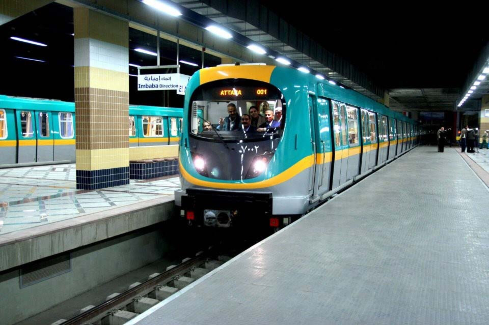
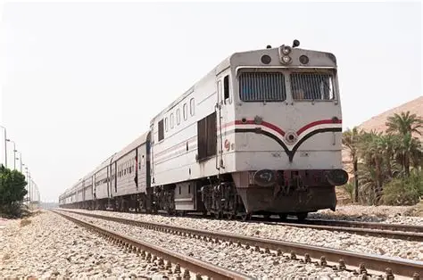
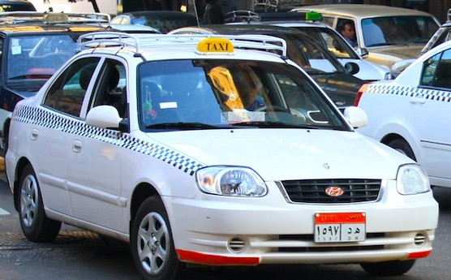
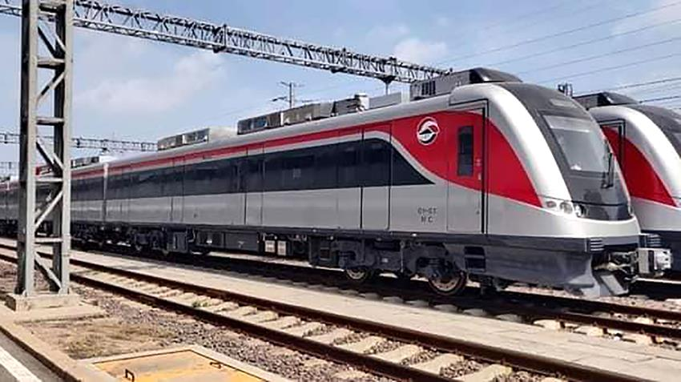

Cairo Metro
The Cairo Metro is one of the fastest and most efficient ways to move inside the capital. It is highly affordable, reliable, and the best way to bypass the city's famous heavy traffic.
Egypt offers a variety of transportation options that make traveling between and inside cities easy and affordable. Visitors can choose between modern systems like the Cairo Metro or traditional options like taxis and intercity buses depending on their itinerary.

The Cairo Metro is one of the fastest and most efficient ways to move inside the capital. It is highly affordable, reliable, and the best way to bypass the city's famous heavy traffic.

Trains connect major hubs like Cairo, Alexandria, Luxor, and Aswan. First-class and sleeper trains are highly recommended for long-distance travel between Upper and Lower Egypt.

Private bus companies like Go Bus or Blue Bus offer air-conditioned, reliable travel between coastal resorts and major cities. They are a great budget-friendly alternative to flying.

While traditional "White Taxis" are everywhere, many visitors prefer ride-hailing apps like Uber or Careem for fixed pricing and GPS-tracked journeys inside urban areas.

The newly developed Electric LRT connects Greater Cairo to the New Administrative Capital. It is a high-speed, air-conditioned, and eco-friendly option for commuters and visitors traveling to the eastern outskirts of the city.

For maximum convenience, mobile apps are the top choice for tourists: